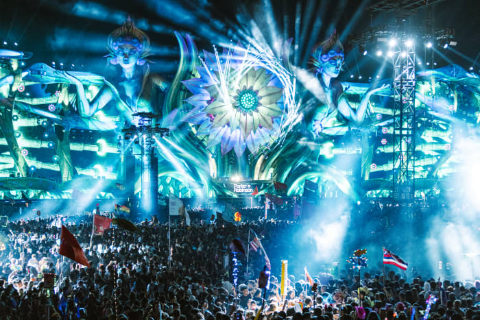

Get to Know your Vibe
Dubstep
Unleash your inner beast? The pulsating energy coming from this genre can build up adrenaline
throughout the track filled with heavy bass drops.
In a crowd head banging, surrounded by fellow bassheads, Strangers become friends, and the
collective energy is electric, but also quite chaotic.
Some artists include: Excision, Subtronics, Wooli, and Space
Laces.
Melodic Dubstep
Take a journey to a different reality, When the beat drops, you ascend. Its like soaring through
the
sky surrounded with unreal fantasy landscapes. In a crowd filled with people,
the euphoric drops are able to keep listeners engaged and most of the time, emotionally
invested.
Some artists include: Illenium, Seven lions, Mitis, and Said the
Sky.
Progressive House
Dance the night away, progressive house is a blend of melody, rhythm, and atmosphere that
invites
you to lose yourself in its evolving landscapes.
The atmosphere in the crowd combined with those rhythms takes you back to 2010-2016 where life
felt
stress free and just living life.
Some artists inclue: Avicii, Zedd, Martin Garrix, and Galantis.